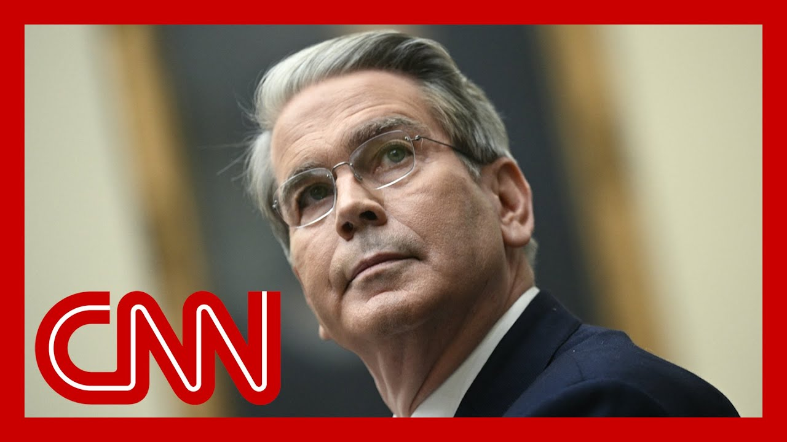

【听取特朗普高级顾问关于对华关税谈判的承认】
Summary: The paragraph discusses the reinstatement of President Trump's tariffs by a federal appeals court, the legal and political reactions, and the stalled trade talks with China, highlighting tensions and uncertainties in U.S. trade policy.
摘要： 这段文字讨论了联邦上诉法院恢复特朗普总统关税的决定、法律和政治反应，以及与中国停滞的贸易谈判，突显了美国贸易政策中的紧张和不确定性。

⏱️ Estimated Reading Time: 16 min
They were off and now they are on again.
它们曾被取消，现在又恢复了。
And yes, we are talking tariffs and nothing short of the American economy, American business, the American consumer and the president's agenda all at stake.
是的，我们谈论的是关税，而且事关美国经济、美国企业、美国消费者以及总统的议程。
A federal appeals court has now reinstated President Trump's sweeping tariffs against dozens of America's trading partners on a temporary basis.
联邦上诉法院现已暂时恢复了特朗普总统对数十个美国贸易伙伴的全面关税。
That twist comes less than 24 hours after the turn of a lower court, halting most of Trump's tariff regime, saying that the president overstepped his authority.
这一转折发生在下级法院裁定停止特朗普大部分关税制度不到24小时后，该法院称总统越权。
Trump applauded the appeal for appeals court's decision and called on the Supreme Court now to step in.
特朗普对上诉法院的决定表示赞赏，并呼吁最高法院介入。
He also attacked the three judge panel behind the earlier unanimous ruling, blocking his tariffs, even asking where did they come from?
他还抨击了此前一致裁定阻止其关税的三法官小组，甚至质问他们从何而来？
Well, one of the two Republican appointees on that panel came from him.
事实上，该小组中两名共和党任命者之一是由他任命的。
Trump himself appointed the judge.
特朗普本人任命了这名法官。
Well, this all plays out a pretty consequential admission now from the Treasury Secretary that the trade talks with China are stalled.
这一切现在演变成了财政部长的一个重要承认：与中国的贸易谈判陷入停滞。
CNN's Alayna Treene is at the white House.
CNN的阿拉娜·特里尼正在白宫。
He's got much more for us.
他将为我们带来更多内容。
What could happen today?
今天可能会发生什么？
That is the unknowable.
这是未知的。
But what do we.
但我们。
But what now?
但现在呢？
Elena?
埃琳娜？
Yeah.
是的。
Look, Kate, I mean, after a day of really allowing his advisers to speak for him, we did hear from the president directly on this lashing out about this court decision.
看，凯特，我是说，在让他的顾问为他发言一整天后，我们确实听到了总统本人对这一法院裁决的猛烈抨击。
Even though we saw the federal appeals court quickly step in and kind of revive the tariffs that the Court of International Trade had initially blocked.
尽管我们看到联邦上诉法院迅速介入，某种程度上恢复了国际贸易法院最初阻止的关税。
Now, you mentioned this, but he was particularly irked.
你提到了这一点，但他特别恼火。
You can see this in his very lengthy post on social media that one of the judges on that three judge panel who decided this ruling was someone that he had pointed himself back during his first term, he argued he was newer to Washington.
你可以从他社交媒体上的长篇帖子中看出，他对三法官小组中一名法官的任命感到不满，这名法官是他第一任期时亲自任命的，他辩称自己当时对华盛顿还不熟悉。
I would argue he was actually two years into his first term when he appointed that judge and blamed others for telling him and recommending that judge to him.
我认为他任命这名法官时已上任两年，并责怪他人向他推荐了这名法官。
But he also asked that the Supreme Court step in immediately to decide this case.
但他还要求最高法院立即介入裁决此案。
He argued that if he had allowed Congress to approve these tariffs initially, they would have sat around, he said, and decided weeks on what these type of levies should be.
他辩称，如果他最初让国会批准这些关税，他们会拖延数周来决定这类征税的细节。
Remember, this is the reason that the court said that he did not have the authority to impose these sweeping tariffs.
记住，这就是法院称他无权实施这些全面关税的原因。
They said he could not go around Congress by declaring that national economic emergency.
法院表示，他不能通过宣布国家经济紧急状态绕过国会。
And you also highlighted that point when he said backroom hustlers, a quote from him should not be allowed to destroy the nation.
你还强调了这一点，当时他说“幕后操纵者”——这是他的原话——不应被允许摧毁国家。
But while the president kind of was stewing over this all day yesterday, Kate, we did see many of his economic advisers go out, kind of do a tour on the media networks to try and make sense of these different rulings.
但昨天总统为此恼火一整天时，凯特，我们看到他的许多经济顾问出来在媒体上巡回解释这些不同的裁决。
And one of those people we heard from was Treasury Secretary Scott.
其中一位是财政部长斯科特。
And he said essentially, quote, that the president has the right to set the trade agenda for the United States.
他基本上说，总统有权为美国制定贸易议程。
But then he also argued that the legal setbacks weren't impacting the trade negotiations with a series of different partners.
但他也辩称，法律挫折并未影响与一系列不同伙伴的贸易谈判。
However, one of the United States biggest trading partners, China, is one where he said some of the conversations have been stalled.
然而，他表示与美国最大的贸易伙伴之一中国的某些对话已陷入停滞。
I want you to listen to how he put it.
我想让你听听他的说法。
I would say that they are a bit stalled.
我会说它们有些停滞。
I believe that we will be having more talks with them in the next few weeks.
我相信我们将在未来几周与他们进行更多会谈。
This is going to require both leaders to weigh in with each other.
这将需要两国领导人相互介入。
They have a very good relationship, and I am confident that the Chinese will come to the table when President Trump makes his preferences known.
他们关系很好，我有信心当特朗普总统明确他的偏好时，中方会回到谈判桌。
So, as you could hear, they're not really projecting a lot of confidence in some of the talks with China.
所以，正如你所听到的，他们对与中国的某些谈判并不十分有信心。
That comes after, of course, they had announced a couple of weeks ago a broader trade agreement between the United States and China trying to avoid some of the steepest tariffs that the president had placed on them.
此前几周，他们宣布了一项更广泛的美中贸易协议，试图避免总统对华征收的一些最高关税。
Now it's down to 30% tariffs on China, but still not exactly looking like an optimistic picture of how those negotiations are going.
现在对华关税降至30%，但谈判前景仍不乐观。
Kate.
凯特。
Yeah, and also a little bit confusing that the president's preferences are not yet known, because that's what he said.
是的，而且总统的偏好尚未明确也让人有些困惑，因为这是他的说法。
When they are known, they'll come to the table.
当它们明确时，他们会回到谈判桌。
So, Lana, thank you so much.
所以，拉娜，非常感谢。
Much more to come from the white House today.
今天白宫还有更多消息。
Joining us right now is CNN legal analyst and former U.S. Attorney Michael Moore.
现在加入我们的是CNN法律分析师、前美国检察官迈克尔·摩尔。
And all of this comes on the heels of a lot of whiplash with relation to Trump's tariffs, appeals courts, lower courts.
这一切都发生在特朗普关税、上诉法院和下级法院的多次反复之后。
Where are things headed?
事情将走向何方？
And that's where the questions begin.
这就是问题的开始。
What do you think of this decision by the appeals court that just came in, Michael, reinstating Trump's tariffs for now.
迈克尔，你对上诉法院刚刚做出的恢复特朗普关税的决定有何看法？
Well I'm glad to be with you this morning.
很高兴今早与你在一起。
This is just part of the ongoing, tariff chaos that's out there.
这只是当前关税混乱的一部分。
And what you saw is the trade court essentially, saying that the tariffs were illegal and that the president had exceeded his authority.
你所看到的是贸易法院基本上称这些关税是非法的，总统越权了。
So he couldn't impose these he didn't have these emergency powers.
所以他不能实施这些——他没有这些紧急权力。
And, frankly, that an emergency is not an emergency just because the executive says it is.
坦率地说，紧急状态不能仅仅因为行政部门的声明就成为紧急状态。
And so the Federal Circuit said, wait a minute, let's wait for a couple of weeks and give us time to look at it.
因此联邦巡回法院说，等一下，让我们等几周，给我们时间研究。
There's a lot of hay being made by the administration.
政府方面有很多炒作。
This is somehow a major reversal.
这似乎是一次重大逆转。
But but in fact, the court said if they did administrative action to give each side the chance to write their briefs and to make their arguments on whether or not, the decision was proper out of the trade court.
但实际上，法院表示如果他们采取行政行动，给双方机会提交书面陈述并就贸易法院的裁决是否恰当进行辩论。
So, you know, it's not unexpected.
所以，你知道，这并不意外。
And for people who do this, for lawyers around the world to do this, this is this is sort of normal course of business for everybody else and especially for the markets.
对于从事这一行的人来说，对世界各地的律师来说，这对其他人尤其是市场来说是正常流程。
I think you'll see this is the kind of thing that leads, to the ongoing chaos that we've seen out of the administration based on these efforts to sort of, you know, namby pamby, randomly throw these tariffs back and forth in some kind of threat and back off them, thrown back it back off.
我认为你会看到，正是这种事导致了政府当前的混乱，他们优柔寡断，随意用关税来回威胁又退缩。
And that's that's what leaves us where we are today.
这就是我们今天的处境。
Namby pamby is it is a technical legal term.
“优柔寡断”是一个技术性法律术语。
I have heard you use it in court.
我听过你在法庭上使用它。
That's right, that's right.
没错，没错。
That President Trump is also in a Atlanta term, is talking about what he was posting about this morning.
特朗普总统也在亚特兰大任期，今早发帖谈论此事。
He's also been posting about it last night, I believe it was or overnight calling on the Supreme Court essentially to skip the appeals court.
他昨晚或今晨还发帖呼吁最高法院基本上跳过上诉法院。
What do you think of that?
你对此有何看法？
You know, these cases are all going to ultimately find their way to the Supreme Court.
你知道，这些案件最终都会提交到最高法院。
and I think that, you know, whether or not it's on an expedited basis that that, frankly, becomes up to the court, that's a little bit like the, you know, being able to predict when the fish are going to bite.
我认为，是否加快审理实际上取决于法院，这有点像预测鱼何时上钩。
It's a little bit of art, a little bit of science.
有点艺术，有点科学。
And you look at some past examples to say, when it happens.
你可以参考过去的例子来判断何时会发生。
And so, you know, the court may very well take it up.
所以，你知道，法院很可能会受理。
The problem, frankly, is for the administration.
坦率地说，问题在于政府。
Is it this court, even though it's made up of a lot of Trump appointees and they've tended to kind of be on the conservative side, the very arguments that Trump is asking and putting forward to the court to support his tariff actions, the court used to strike down, some of Biden's actions, essentially, that the president does not have this power if it's not explicitly given by Congress.
尽管这个法院由许多特朗普任命者组成且倾向于保守，但特朗普用来支持其关税行动的论点，正是法院曾用来驳回拜登一些行动的论点，即如果国会未明确授权，总统就没有这种权力。
So, you know, he may be, you know, grabbing the dog by the tail, trying to get there too quickly.
所以，你知道，他可能是在抓狗尾巴，试图过快地达到目的。
and he probably should focus on this fight right now in the Federal Circuit.
他或许应该专注于目前在联邦巡回法院的斗争。
We also heard from more than one top white House official yesterday that they were looking into other options now to impose tariffs and circumvent the courts.
我们昨天还听到不止一位白宫高级官员表示，他们正在研究其他征收关税并绕过法院的选项。
Let me play some of what we heard.
让我播放一些我们听到的内容。
There are 3 or 4 other ways to do it.
还有其他三四种方法。
There are different approaches that would take a couple of months to to put these in place.
有不同的方法需要几个月时间实施。
And, using procedures that have been approved in the past.
并使用过去已批准的程序。
Of course, there's no plan B is plan A, okay.
当然，没有B计划，A计划就是一切。
Plan A encompasses all strategic options.
A计划包含所有战略选项。
And when we move forward, we had a full view of what the battlefield looks like, that leading many to wonder if there are other options and why didn't they employ these options in the first place.
当我们推进时，我们对战场有全面了解，这让许多人怀疑是否有其他选项以及为何他们最初不使用这些选项。
I mean, does that admission, especially when you hear that from Kevin Hassett, 3 or 4 options that were already looking at, does that have legal implications?
我是说，这种承认，尤其是当你听到凯文·哈西特说有其他三四种选项时，是否有法律影响？
I think it does.
我认为有。
you know, and frankly, plan A has only been to to try to raise the power of the executive.
你知道，坦率地说，A计划只是试图扩大行政权力。
That's been the plan a just to go at it with full guns blazing.
这就是A计划，全力以赴。
And that has not worked in courts across the country even by Trump appointed judges.
这在全国各地的法院都未奏效，即使是特朗普任命的法官。
So I think the administration is seeing that.
所以我认为政府意识到了这一点。
But to suggest and to now admit, the administration is saying, look, there are other things we could have done and maybe we should have done there ways around this.
但现在政府承认，他们本可以采取其他方法绕过这一点。
And one of those, frankly, be working with Congress.
其中之一，坦率地说，是与国会合作。
Congress under the Constitution has the power to levy tariffs and taxes.
根据宪法，国会有权征收关税和税款。
I mean, that's what Congress does.
我是说，这就是国会的职责。
I control the purse in the in the taxation powers.
我控制着征税权。
you know, that's that's they might should go back to that place.
你知道，他们或许应该回到这一点。
But courts listening to this argument will say, well, wait a minute, how was administration harmed by, you know, leaving this, the trade court order in place, if in fact, you've got a way around it, you know, so you might you can't abuse and, extend your powers lawfully and claim then that you're going to be heard if, in fact, you didn't even have to extend those powers in the first place.
但法院听到这一论点时会说，等一下，如果你们有办法绕过贸易法院的命令，政府如何因此受损？所以你们不能滥用并合法扩展权力，然后声称需要听证，如果你们一开始就不必扩展这些权力。
And that's and that's where they're going to find themselves with.
这就是他们将面临的处境。
There is there are going either to the Federal Circuit or to the Supreme Court.
他们将前往联邦巡回法院或最高法院。
Yeah.
是的。
And why declare an emergency and lean on that if there are other avenues, if there are other avenues to go around it?
如果有其他途径绕过，为什么要宣布紧急状态并依赖它？
Michael, that's always great to see you.
迈克尔，见到你总是很棒。
Thank you so much.
非常感谢。
Not a man b pamby ever.
绝不是优柔寡断的人。
We really appreciate it.
我们非常感激。